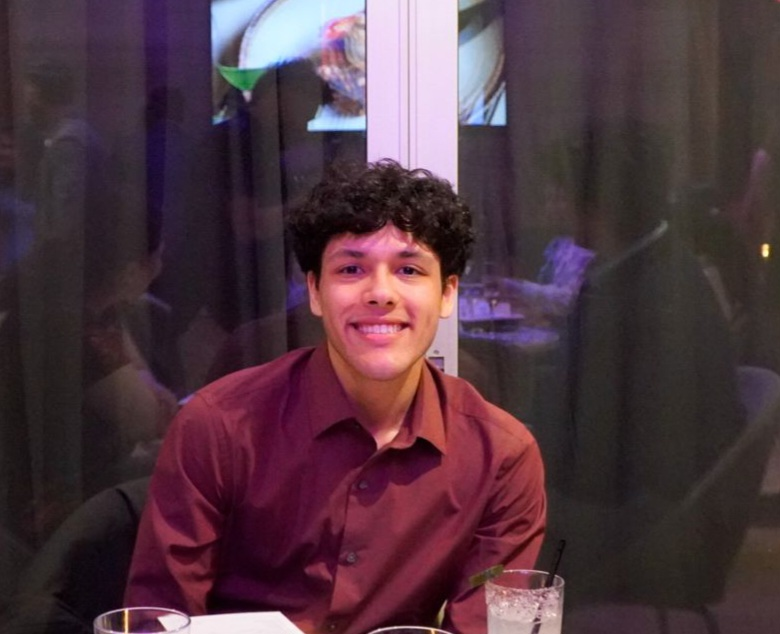

My name is Kartik Reddy and I am a student at the University of Texas at Dallas. I am currently Aspiring UX Designer and Content Strategist passionate about bridging the gap between user needs and brand messaging. Leveraging a Bachelor’s in Arts, Technology, and Emerging Communication, I specialize in transforming design thinking frameworks into high-fidelity prototypes and engaging marketing campaigns.

Education
- University of Texas at Dallas
GPA: 3.87 | May 2027
- Bachelor of Arts in Technology and Emerging Communication
Skills
- Figma
- HTML/CSS
- Adobe (Photoshop, Illustrator, After Effects, Lightroom)
- Language: English (Fluent), German (Conversational)
Professional Experience
Shwarma Press, Georgetown
Lead Associate
May 2024 – July 2024
- Demonstrated operational flexibility by managing food prep, point-of-sale transactions, and customer service.
- Drove revenue growth by implementing strategic product sampling initiatives and consultative upselling
techniques to promote margins
- Maintained optimal inventory levels through proactive monitoring and forecasting, preventing stockouts to ensure
uninterrupted service.
Organizational Experience
August 2025 – Present
UTD TV Marketing Team, University of Texas at Dallas
- Collaborated with a team to develop and run advertising campaigns for upcoming UTDTV short films, ensuring
consistent brand messaging across student media platforms.
- Contributed to productive ideation sessions using design thinking frameworks to generate creative promotional
concepts for upcoming short films, ensuring a diverse range of content for student audiences.
.
UX Club,, University of Texas at Dallas
- Attended workshops and industry speaker events to develop skills in UX and Design while networking with
professionals to integrate current industry best practices into academic projects.
Academic Project Experience
November 2024
Designathon, UX, Club
- Led a team of 4 in a 24-hour design competition to conceptualize and prototype a mobile application for campus
room reservations using Figma, Illustrator, and Photoshop.
- Created user personas, empathy maps, and user journey maps to identify friction points in campus facility
management and justify design iteration.
- Presented a high-fidelity prototype and strategic design rationale to a panel of industry judges, demonstrating
how the solution balanced student accessibility with faculty administrative needs.